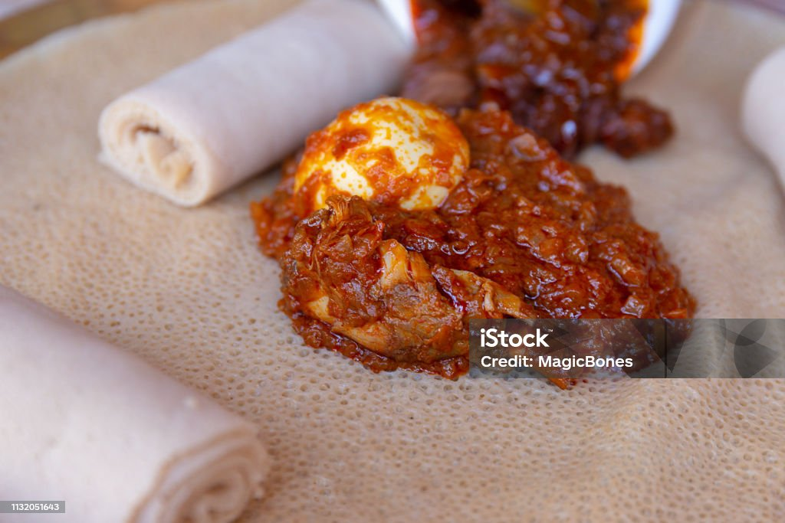

Trending Dishes

Injera with Doro Wat (Eritrean)
Ingredients:
- 1 cup teff flour
- 2 cups water
- 1 chicken (for Doro Wat)
- Berbere spice mix
Steps:
- Prepare the injera batter and let it ferment.
- Cook the Doro Wat with spices and chicken.
- Serve the Doro Wat on Injera.

Spaghetti Carbonara (Italian)
Ingredients:
- Spaghetti
- Eggs
- Pancetta or guanciale
- Parmesan cheese
Steps:
- Cook the spaghetti until al dente.
- Fry pancetta or guanciale.
- Mix eggs and cheese, then combine with pasta.

T'ej (Eritrean Honey Wine)
Ingredients:
- Honey
- Water
- Gesho leaves
- Yeast
Steps:
- Mix honey and water in a container.
- Add yeast and gesho leaves to ferment.
- Let it ferment for several weeks.

Margherita Pizza (Italian)
Ingredients:
- Pizza dough
- Tomato sauce
- Fresh mozzarella
- Fresh basil leaves
Steps:
- Prepare the pizza dough and spread tomato sauce.
- Add mozzarella and basil leaves.
- Bake in a hot oven until crispy.